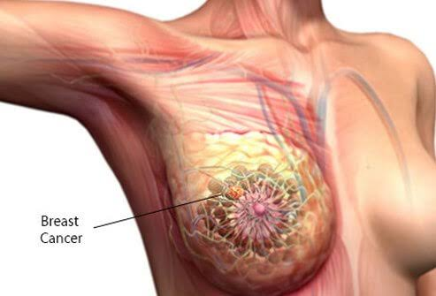

No breast is typical. What is normal for you may not be normal for another woman. Most women say their breasts feel lumpy or uneven. The way your breasts look and feel can be affected by getting your period, having children, losing or gaining weight, and taking certain medications. Breasts also tend to change as you age.

Some warning signs of breast cancer are:
New lump in the breast or underarm (armpit).
Thickening or swelling of part of the breast.
Irritation or dimpling of breast skin.
Redness or flaky skin in the nipple area or the breast.
Pulling in of the nipple or pain in the nipple area.
Any change in the size or the shape of the breast.